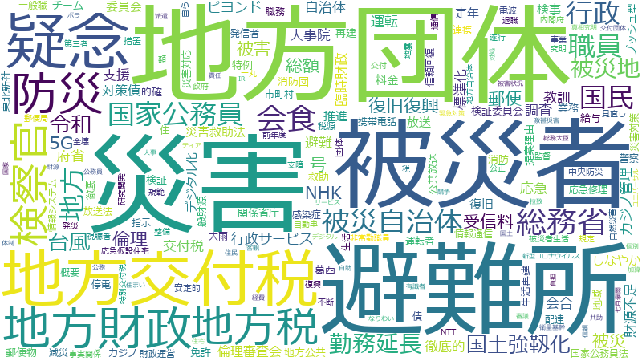

武田良太

国民 、調査 、総務省 、行政 、令和 、地方 、地域 、団体 、職員 、支援 、推進 、連携 、委員会 、災害 、措置 、業務 、自治体 、整備 、事業 、地方公共 、疑念 、体制 、情報 、地方交付税 、政府 、感染症 、地方団体 、政策 、規定 、会食 、総額 、防災 、利用 、標準化 、社会 、見直し 、負担 、環境 、課題 、地方財政 、地方税 、避難所 、事業者 、運営 、責任 、検証 、計画 、観点 、NHK 、倫理 、協力 、個別 、額 、会合 、新型コロナウイルス 、情報システム 、検察官 、管理 、指導 、指示 、G 、国家公務員 、審議 、概要 、サービス 、デジタル化 、在り方 、安定的 、特例 、事務 、向上 、運転 、基準 、構築 、徹底的 、維持 、市町村 、技術 、関係省庁 、平成 、迅速 、システム 、徹底 、放送 、経費 、的確 、役割 、改善 、情報通信 、自ら 、政策評価 、機能 、事態 、円滑 、安全 、拡大 、経営 、郵便 、住民 、強化
総務省 、国民 、行政 、調査 、地方団体 、地方 、地方交付税 、疑念 、令和 、会食 、職員 、団体 、地方財政 、標準化 、地方税 、災害 、地方公共 、検察官 、地域 、避難所 、情報システム 、委員会 、推進 、倫理 、総額 、業務 、自治体 、連携 、支援 、NHK 、政策評価 、防災 、G 、措置 、受信料 、会合 、整備 、国家公務員 、東北新社 、発信者 、勤務延長 、郵便 、行政サービス 、交付税 、事業 、外資規制 、放送 、徹底的 、運転 、感染症 、体制 、府省 、情報通信 、政策 、規定 、デジタル化 、見直し 、検証 、概要 、情報 、定年 、負担 、安定的 、検証委員会 、放送法 、運営 、ビヨンド 、政府 、指示 、財源不足 、免許 、特例 、責任 、社会 、利用 、臨時財政 、料金 、事業者 、検事 、額 、対策債 、一般財源 、審議 、環境 、事務 、的確 、被災者 、公共放送 、復旧復興 、個別 、計画 、提案理由 、サービス 、指導 、国土強靱化 、第三者 、倫理審査会 、課題 、地方公共団体 、職務
総務省
| 言及回数 | 333回 |
| 言及発言者数（参考人を含む） | 645人 |
国民
| 言及回数 | 416回 |
| 言及発言者数（参考人を含む） | 1234人 |
行政
| 言及回数 | 319回 |
| 言及発言者数（参考人を含む） | 900人 |
調査
| 言及回数 | 383回 |
| 言及発言者数（参考人を含む） | 1264人 |
地方団体
| 言及回数 | 130回 |
| 言及発言者数（参考人を含む） | 91人 |
地方
| 言及回数 | 268回 |
| 言及発言者数（参考人を含む） | 950人 |
地方交付税
| 言及回数 | 133回 |
| 言及発言者数（参考人を含む） | 195人 |
疑念
| 言及回数 | 142回 |
| 言及発言者数（参考人を含む） | 261人 |
令和
| 言及回数 | 273回 |
| 言及発言者数（参考人を含む） | 1131人 |
会食
| 言及回数 | 124回 |
| 言及発言者数（参考人を含む） | 184人 |
職員
| 言及回数 | 222回 |
| 言及発言者数（参考人を含む） | 889人 |
団体
| 言及回数 | 231回 |
| 言及発言者数（参考人を含む） | 985人 |
地方財政
| 言及回数 | 107回 |
| 言及発言者数（参考人を含む） | 142人 |
標準化
| 言及回数 | 117回 |
| 言及発言者数（参考人を含む） | 202人 |
地方税
| 言及回数 | 106回 |
| 言及発言者数（参考人を含む） | 166人 |
災害
| 言及回数 | 184回 |
| 言及発言者数（参考人を含む） | 759人 |
地方公共
| 言及回数 | 152回 |
| 言及発言者数（参考人を含む） | 573人 |
検察官
| 言及回数 | 91回 |
| 言及発言者数（参考人を含む） | 136人 |
地域
| 言及回数 | 239回 |
| 言及発言者数（参考人を含む） | 1313人 |
避難所
| 言及回数 | 106回 |
| 言及発言者数（参考人を含む） | 243人 |
情報システム
| 言及回数 | 91回 |
| 言及発言者数（参考人を含む） | 164人 |
委員会
| 言及回数 | 198回 |
| 言及発言者数（参考人を含む） | 1080人 |
推進
| 言及回数 | 211回 |
| 言及発言者数（参考人を含む） | 1195人 |
倫理
| 言及回数 | 97回 |
| 言及発言者数（参考人を含む） | 216人 |
総額
| 言及回数 | 121回 |
| 言及発言者数（参考人を含む） | 471人 |
業務
| 言及回数 | 170回 |
| 言及発言者数（参考人を含む） | 953人 |
自治体
| 言及回数 | 169回 |
| 言及発言者数（参考人を含む） | 949人 |
連携
| 言及回数 | 202回 |
| 言及発言者数（参考人を含む） | 1262人 |
支援
| 言及回数 | 213回 |
| 言及発言者数（参考人を含む） | 1362人 |
NHK
| 言及回数 | 97回 |
| 言及発言者数（参考人を含む） | 276人 |
政策評価
| 言及回数 | 65回 |
| 言及発言者数（参考人を含む） | 65人 |
防災
| 言及回数 | 119回 |
| 言及発言者数（参考人を含む） | 512人 |
G
| 言及回数 | 87回 |
| 言及発言者数（参考人を含む） | 227人 |
措置
| 言及回数 | 173回 |
| 言及発言者数（参考人を含む） | 1206人 |
受信料
| 言及回数 | 60回 |
| 言及発言者数（参考人を含む） | 86人 |
会合
| 言及回数 | 93回 |
| 言及発言者数（参考人を含む） | 384人 |
整備
| 言及回数 | 166回 |
| 言及発言者数（参考人を含む） | 1215人 |
国家公務員
| 言及回数 | 87回 |
| 言及発言者数（参考人を含む） | 331人 |
東北新社
| 言及回数 | 56回 |
| 言及発言者数（参考人を含む） | 85人 |
発信者
| 言及回数 | 49回 |
| 言及発言者数（参考人を含む） | 51人 |
勤務延長
| 言及回数 | 52回 |
| 言及発言者数（参考人を含む） | 68人 |
郵便
| 言及回数 | 64回 |
| 言及発言者数（参考人を含む） | 154人 |
行政サービス
| 言及回数 | 62回 |
| 言及発言者数（参考人を含む） | 145人 |
交付税
| 言及回数 | 60回 |
| 言及発言者数（参考人を含む） | 130人 |
事業
| 言及回数 | 152回 |
| 言及発言者数（参考人を含む） | 1247人 |
外資規制
| 言及回数 | 49回 |
| 言及発言者数（参考人を含む） | 66人 |
放送
| 言及回数 | 69回 |
| 言及発言者数（参考人を含む） | 237人 |
徹底的
| 言及回数 | 76回 |
| 言及発言者数（参考人を含む） | 322人 |
運転
| 言及回数 | 78回 |
| 言及発言者数（参考人を含む） | 352人 |
感染症
| 言及回数 | 131回 |
| 言及発言者数（参考人を含む） | 1067人 |
体制
| 言及回数 | 137回 |
| 言及発言者数（参考人を含む） | 1152人 |
府省
| 言及回数 | 61回 |
| 言及発言者数（参考人を含む） | 188人 |
情報通信
| 言及回数 | 66回 |
| 言及発言者数（参考人を含む） | 250人 |
政策
| 言及回数 | 127回 |
| 言及発言者数（参考人を含む） | 1098人 |
規定
| 言及回数 | 125回 |
| 言及発言者数（参考人を含む） | 1080人 |
デジタル化
| 言及回数 | 83回 |
| 言及発言者数（参考人を含む） | 488人 |
見直し
| 言及回数 | 114回 |
| 言及発言者数（参考人を含む） | 935人 |
検証
| 言及回数 | 100回 |
| 言及発言者数（参考人を含む） | 735人 |
概要
| 言及回数 | 86回 |
| 言及発言者数（参考人を含む） | 544人 |
情報
| 言及回数 | 136回 |
| 言及発言者数（参考人を含む） | 1255人 |
定年
| 言及回数 | 59回 |
| 言及発言者数（参考人を含む） | 209人 |
負担
| 言及回数 | 114回 |
| 言及発言者数（参考人を含む） | 1000人 |
安定的
| 言及回数 | 82回 |
| 言及発言者数（参考人を含む） | 536人 |
検証委員会
| 言及回数 | 45回 |
| 言及発言者数（参考人を含む） | 84人 |
放送法
| 言及回数 | 48回 |
| 言及発言者数（参考人を含む） | 110人 |
運営
| 言及回数 | 104回 |
| 言及発言者数（参考人を含む） | 907人 |
ビヨンド
| 言及回数 | 39回 |
| 言及発言者数（参考人を含む） | 49人 |
政府
| 言及回数 | 133回 |
| 言及発言者数（参考人を含む） | 1333人 |
指示
| 言及回数 | 88回 |
| 言及発言者数（参考人を含む） | 668人 |
財源不足
| 言及回数 | 38回 |
| 言及発言者数（参考人を含む） | 46人 |
免許
| 言及回数 | 62回 |
| 言及発言者数（参考人を含む） | 296人 |
特例
| 言及回数 | 81回 |
| 言及発言者数（参考人を含む） | 585人 |
責任
| 言及回数 | 102回 |
| 言及発言者数（参考人を含む） | 922人 |
社会
| 言及回数 | 116回 |
| 言及発言者数（参考人を含む） | 1144人 |
利用
| 言及回数 | 118回 |
| 言及発言者数（参考人を含む） | 1181人 |
臨時財政
| 言及回数 | 36回 |
| 言及発言者数（参考人を含む） | 40人 |
料金
| 言及回数 | 60回 |
| 言及発言者数（参考人を含む） | 284人 |
事業者
| 言及回数 | 105回 |
| 言及発言者数（参考人を含む） | 995人 |
検事
| 言及回数 | 38回 |
| 言及発言者数（参考人を含む） | 55人 |
額
| 言及回数 | 95回 |
| 言及発言者数（参考人を含む） | 864人 |
対策債
| 言及回数 | 35回 |
| 言及発言者数（参考人を含む） | 43人 |
一般財源
| 言及回数 | 41回 |
| 言及発言者数（参考人を含む） | 89人 |
審議
| 言及回数 | 87回 |
| 言及発言者数（参考人を含む） | 769人 |
環境
| 言及回数 | 113回 |
| 言及発言者数（参考人を含む） | 1201人 |
事務
| 言及回数 | 80回 |
| 言及発言者数（参考人を含む） | 665人 |
的確
| 言及回数 | 68回 |
| 言及発言者数（参考人を含む） | 463人 |
被災者
| 言及回数 | 54回 |
| 言及発言者数（参考人を含む） | 247人 |
公共放送
| 言及回数 | 36回 |
| 言及発言者数（参考人を含む） | 55人 |
復旧復興
| 言及回数 | 47回 |
| 言及発言者数（参考人を含む） | 163人 |
個別
| 言及回数 | 95回 |
| 言及発言者数（参考人を含む） | 945人 |
計画
| 言及回数 | 100回 |
| 言及発言者数（参考人を含む） | 1040人 |
提案理由
| 言及回数 | 40回 |
| 言及発言者数（参考人を含む） | 94人 |
サービス
| 言及回数 | 85回 |
| 言及発言者数（参考人を含む） | 800人 |
指導
| 言及回数 | 89回 |
| 言及発言者数（参考人を含む） | 893人 |
国土強靱化
| 言及回数 | 50回 |
| 言及発言者数（参考人を含む） | 241人 |
第三者
| 言及回数 | 58回 |
| 言及発言者数（参考人を含む） | 374人 |
倫理審査会
| 言及回数 | 34回 |
| 言及発言者数（参考人を含む） | 58人 |
課題
| 言及回数 | 110回 |
| 言及発言者数（参考人を含む） | 1308人 |
地方公共団体
| 言及回数 | 51回 |
| 言及発言者数（参考人を含む） | 268人 |
職務
| 言及回数 | 57回 |
| 言及発言者数（参考人を含む） | 376人 |
国民
| 言及回数 | 416回 |
| 言及発言者数（参考人を含む） | 1234人 |
調査
| 言及回数 | 383回 |
| 言及発言者数（参考人を含む） | 1264人 |
総務省
| 言及回数 | 333回 |
| 言及発言者数（参考人を含む） | 645人 |
行政
| 言及回数 | 319回 |
| 言及発言者数（参考人を含む） | 900人 |
令和
| 言及回数 | 273回 |
| 言及発言者数（参考人を含む） | 1131人 |
地方
| 言及回数 | 268回 |
| 言及発言者数（参考人を含む） | 950人 |
地域
| 言及回数 | 239回 |
| 言及発言者数（参考人を含む） | 1313人 |
団体
| 言及回数 | 231回 |
| 言及発言者数（参考人を含む） | 985人 |
職員
| 言及回数 | 222回 |
| 言及発言者数（参考人を含む） | 889人 |
支援
| 言及回数 | 213回 |
| 言及発言者数（参考人を含む） | 1362人 |
推進
| 言及回数 | 211回 |
| 言及発言者数（参考人を含む） | 1195人 |
連携
| 言及回数 | 202回 |
| 言及発言者数（参考人を含む） | 1262人 |
委員会
| 言及回数 | 198回 |
| 言及発言者数（参考人を含む） | 1080人 |
災害
| 言及回数 | 184回 |
| 言及発言者数（参考人を含む） | 759人 |
措置
| 言及回数 | 173回 |
| 言及発言者数（参考人を含む） | 1206人 |
業務
| 言及回数 | 170回 |
| 言及発言者数（参考人を含む） | 953人 |
自治体
| 言及回数 | 169回 |
| 言及発言者数（参考人を含む） | 949人 |
整備
| 言及回数 | 166回 |
| 言及発言者数（参考人を含む） | 1215人 |
事業
| 言及回数 | 152回 |
| 言及発言者数（参考人を含む） | 1247人 |
地方公共
| 言及回数 | 152回 |
| 言及発言者数（参考人を含む） | 573人 |
疑念
| 言及回数 | 142回 |
| 言及発言者数（参考人を含む） | 261人 |
体制
| 言及回数 | 137回 |
| 言及発言者数（参考人を含む） | 1152人 |
情報
| 言及回数 | 136回 |
| 言及発言者数（参考人を含む） | 1255人 |
地方交付税
| 言及回数 | 133回 |
| 言及発言者数（参考人を含む） | 195人 |
政府
| 言及回数 | 133回 |
| 言及発言者数（参考人を含む） | 1333人 |
感染症
| 言及回数 | 131回 |
| 言及発言者数（参考人を含む） | 1067人 |
地方団体
| 言及回数 | 130回 |
| 言及発言者数（参考人を含む） | 91人 |
政策
| 言及回数 | 127回 |
| 言及発言者数（参考人を含む） | 1098人 |
規定
| 言及回数 | 125回 |
| 言及発言者数（参考人を含む） | 1080人 |
会食
| 言及回数 | 124回 |
| 言及発言者数（参考人を含む） | 184人 |
総額
| 言及回数 | 121回 |
| 言及発言者数（参考人を含む） | 471人 |
防災
| 言及回数 | 119回 |
| 言及発言者数（参考人を含む） | 512人 |
利用
| 言及回数 | 118回 |
| 言及発言者数（参考人を含む） | 1181人 |
標準化
| 言及回数 | 117回 |
| 言及発言者数（参考人を含む） | 202人 |
社会
| 言及回数 | 116回 |
| 言及発言者数（参考人を含む） | 1144人 |
見直し
| 言及回数 | 114回 |
| 言及発言者数（参考人を含む） | 935人 |
負担
| 言及回数 | 114回 |
| 言及発言者数（参考人を含む） | 1000人 |
環境
| 言及回数 | 113回 |
| 言及発言者数（参考人を含む） | 1201人 |
課題
| 言及回数 | 110回 |
| 言及発言者数（参考人を含む） | 1308人 |
地方財政
| 言及回数 | 107回 |
| 言及発言者数（参考人を含む） | 142人 |
地方税
| 言及回数 | 106回 |
| 言及発言者数（参考人を含む） | 166人 |
避難所
| 言及回数 | 106回 |
| 言及発言者数（参考人を含む） | 243人 |
事業者
| 言及回数 | 105回 |
| 言及発言者数（参考人を含む） | 995人 |
運営
| 言及回数 | 104回 |
| 言及発言者数（参考人を含む） | 907人 |
責任
| 言及回数 | 102回 |
| 言及発言者数（参考人を含む） | 922人 |
検証
| 言及回数 | 100回 |
| 言及発言者数（参考人を含む） | 735人 |
計画
| 言及回数 | 100回 |
| 言及発言者数（参考人を含む） | 1040人 |
観点
| 言及回数 | 98回 |
| 言及発言者数（参考人を含む） | 1351人 |
NHK
| 言及回数 | 97回 |
| 言及発言者数（参考人を含む） | 276人 |
倫理
| 言及回数 | 97回 |
| 言及発言者数（参考人を含む） | 216人 |
協力
| 言及回数 | 97回 |
| 言及発言者数（参考人を含む） | 1177人 |
個別
| 言及回数 | 95回 |
| 言及発言者数（参考人を含む） | 945人 |
額
| 言及回数 | 95回 |
| 言及発言者数（参考人を含む） | 864人 |
会合
| 言及回数 | 93回 |
| 言及発言者数（参考人を含む） | 384人 |
新型コロナウイルス
| 言及回数 | 92回 |
| 言及発言者数（参考人を含む） | 1037人 |
情報システム
| 言及回数 | 91回 |
| 言及発言者数（参考人を含む） | 164人 |
検察官
| 言及回数 | 91回 |
| 言及発言者数（参考人を含む） | 136人 |
管理
| 言及回数 | 90回 |
| 言及発言者数（参考人を含む） | 1096人 |
指導
| 言及回数 | 89回 |
| 言及発言者数（参考人を含む） | 893人 |
指示
| 言及回数 | 88回 |
| 言及発言者数（参考人を含む） | 668人 |
G
| 言及回数 | 87回 |
| 言及発言者数（参考人を含む） | 227人 |
国家公務員
| 言及回数 | 87回 |
| 言及発言者数（参考人を含む） | 331人 |
審議
| 言及回数 | 87回 |
| 言及発言者数（参考人を含む） | 769人 |
概要
| 言及回数 | 86回 |
| 言及発言者数（参考人を含む） | 544人 |
サービス
| 言及回数 | 85回 |
| 言及発言者数（参考人を含む） | 800人 |
デジタル化
| 言及回数 | 83回 |
| 言及発言者数（参考人を含む） | 488人 |
在り方
| 言及回数 | 82回 |
| 言及発言者数（参考人を含む） | 910人 |
安定的
| 言及回数 | 82回 |
| 言及発言者数（参考人を含む） | 536人 |
特例
| 言及回数 | 81回 |
| 言及発言者数（参考人を含む） | 585人 |
事務
| 言及回数 | 80回 |
| 言及発言者数（参考人を含む） | 665人 |
向上
| 言及回数 | 78回 |
| 言及発言者数（参考人を含む） | 950人 |
運転
| 言及回数 | 78回 |
| 言及発言者数（参考人を含む） | 352人 |
基準
| 言及回数 | 77回 |
| 言及発言者数（参考人を含む） | 937人 |
構築
| 言及回数 | 77回 |
| 言及発言者数（参考人を含む） | 907人 |
徹底的
| 言及回数 | 76回 |
| 言及発言者数（参考人を含む） | 322人 |
維持
| 言及回数 | 76回 |
| 言及発言者数（参考人を含む） | 985人 |
市町村
| 言及回数 | 73回 |
| 言及発言者数（参考人を含む） | 702人 |
技術
| 言及回数 | 73回 |
| 言及発言者数（参考人を含む） | 961人 |
関係省庁
| 言及回数 | 73回 |
| 言及発言者数（参考人を含む） | 703人 |
平成
| 言及回数 | 72回 |
| 言及発言者数（参考人を含む） | 1136人 |
迅速
| 言及回数 | 71回 |
| 言及発言者数（参考人を含む） | 800人 |
システム
| 言及回数 | 69回 |
| 言及発言者数（参考人を含む） | 898人 |
徹底
| 言及回数 | 69回 |
| 言及発言者数（参考人を含む） | 808人 |
放送
| 言及回数 | 69回 |
| 言及発言者数（参考人を含む） | 237人 |
経費
| 言及回数 | 69回 |
| 言及発言者数（参考人を含む） | 645人 |
的確
| 言及回数 | 68回 |
| 言及発言者数（参考人を含む） | 463人 |
役割
| 言及回数 | 67回 |
| 言及発言者数（参考人を含む） | 1013人 |
改善
| 言及回数 | 67回 |
| 言及発言者数（参考人を含む） | 967人 |
情報通信
| 言及回数 | 66回 |
| 言及発言者数（参考人を含む） | 250人 |
自ら
| 言及回数 | 66回 |
| 言及発言者数（参考人を含む） | 688人 |
政策評価
| 言及回数 | 65回 |
| 言及発言者数（参考人を含む） | 65人 |
機能
| 言及回数 | 65回 |
| 言及発言者数（参考人を含む） | 981人 |
事態
| 言及回数 | 64回 |
| 言及発言者数（参考人を含む） | 814人 |
円滑
| 言及回数 | 64回 |
| 言及発言者数（参考人を含む） | 675人 |
安全
| 言及回数 | 64回 |
| 言及発言者数（参考人を含む） | 999人 |
拡大
| 言及回数 | 64回 |
| 言及発言者数（参考人を含む） | 1141人 |
経営
| 言及回数 | 64回 |
| 言及発言者数（参考人を含む） | 790人 |
郵便
| 言及回数 | 64回 |
| 言及発言者数（参考人を含む） | 154人 |
住民
| 言及回数 | 63回 |
| 言及発言者数（参考人を含む） | 651人 |
強化
| 言及回数 | 63回 |
| 言及発言者数（参考人を含む） | 1151人 |